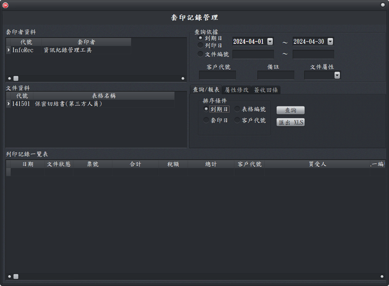

文件記錄管理
文件有設定「列印記錄存檔」(文件管理視窗)，文件編號有進行登錄(文件領用登錄)時，當文件列印時，列印資料會自動存檔，這些記錄可供日後查詢、列印成報表。
- 文件記錄管理目前僅提供支票類(依銀行帳號)及發票類(依使用者代號)的存檔及查詢功能。
- 「查詢/報表」工作頁：可先在「查詢依據」指定日期或文件編號、到期日(文件上面的日期)、列印日(可選擇僅到期日)、文件編號、備註內容、文件屬性等多種參數進行查詢。查詢後可以產生3種報表：
- 日計表：以日期為統計單位，例如支票列印會算出某日應付票款及金額。
- 明細表：將某個指定範圍內的套印記錄，逐一顯示(列印)出來。
- 「屬性俢改」工作頁：改變表可的屬性，以利自動帶入空白表格，或將文件作廢管理。
- 「內容修改」工作頁：可修改指定資料編號的內容。另於本系統主頁的輸入列印印的地方，也可以輸入編號，然後修改內容再按列印(存檔)，也可以進行內容修改。
- 「簽收回條」工作頁：如有需要列印改變表可的屬性，以利自動帶入空白表格，或將文件作廢管理。
- 可以依文件(如支票)號碼列印領款簽收單，方便支票交付及管理。
- 請依文件編號查詢列印領款簽收單。
- 請投入A4大小的紙張，一張紙可以印2張存款簽收單(A5格式)。

列印記錄管理